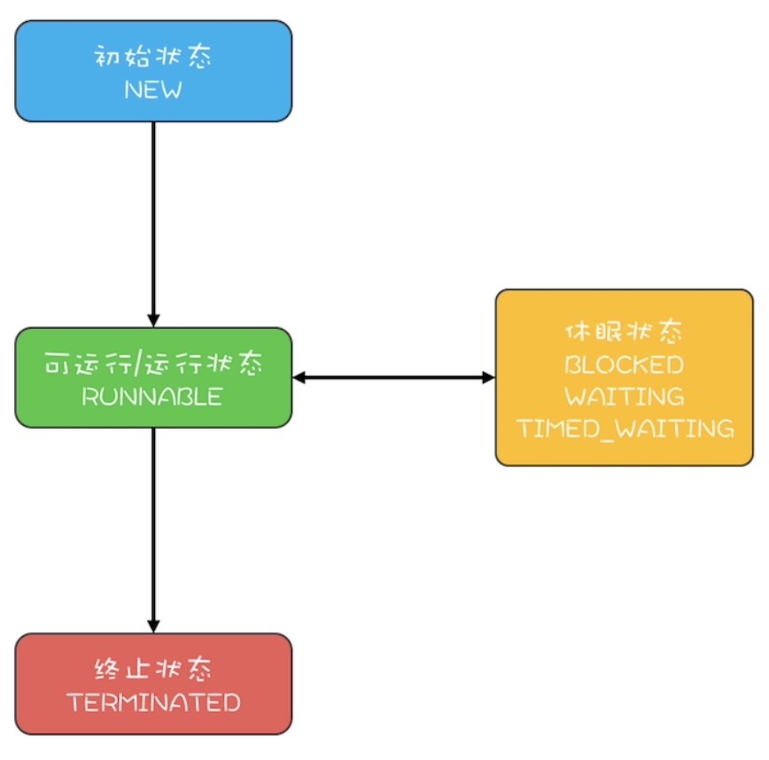
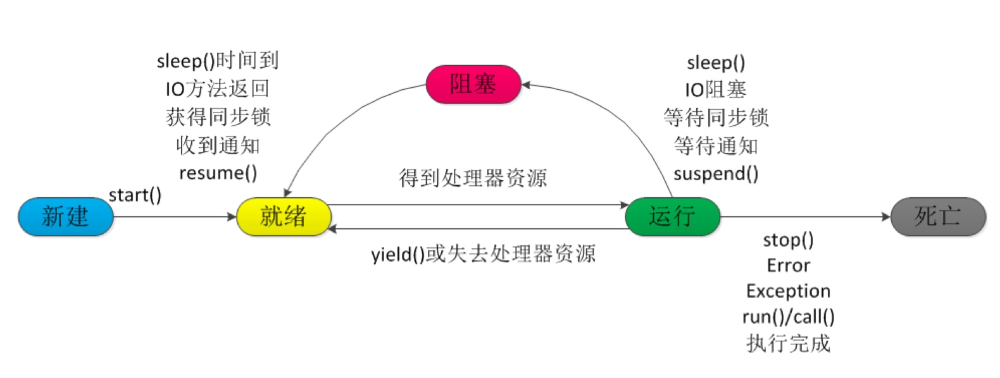
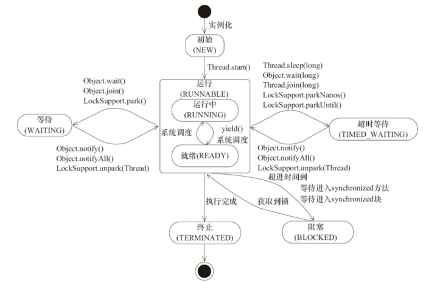

Java 并发 - 线程
线程创建
- 通过继承Thread类，重写run方法。
- 通过实现runable接口。
- 通过实现callable接口.
public class CreateThreadDemo {
public static void main(String[] args) {
//1.继承Thread
Thread thread = new Thread() {
@Override
public void run() {
System.out.println("继承Thread");
super.run();
}
};
thread.start();
//2.实现runable接口
Thread thread1 = new Thread(new Runnable() {
@Override
public void run() {
System.out.println("实现runable接口");
}
});
thread1.start();
//3.实现callable接口
ExecutorService service = Executors.newSingleThreadExecutor();
Future<String> future = service.submit(new Callable() {
@Override
public String call() throws Exception {
return "通过实现Callable接口";
}
});
try {
String result = future.get();
System.out.println(result);
} catch (InterruptedException e) {
e.printStackTrace();
} catch (ExecutionException e) {
e.printStackTrace();
}
}
}
线程状态
- NEW（初始化状态）
- RUNNABLE（可运行 / 运行状态）
- BLOCKED（阻塞状态）
- WAITING（无时限等待）
- TIMED_WAITING（有时限等待）
- TERMINATED（终止状态）
注意这是 JVM 对线程的抽象，JVM 并不关心操作系统调度相关的状态。
其中阻塞，等待，有限等待状态下的线程是没有 CPU 使用权的。
我们就可以把线程状态简单分为四类。

生命周期

新建(New)
当程序使用 new 关键字创建了一个线程之后，该线程就处于新建状态，此时仅由 JVM 为其分配内存，并初始化其成员变量的值。就绪（RUNNABLE）
当线程对象调用了 start() 方法之后，该线程处于就绪状态。Java 虚拟机会为其创建方法调用栈和程序计数器，等待调度运行。运行（RUNNING）
如果处于就绪状态的线程获得了 CPU，开始执行 run()方法的线程执行体，则该线程处于运行状态。阻塞（BLOCKED）
阻塞状态是指线程因为某种原因放弃了 cpu 使用权，也即让出了 cpu timeslice，暂时停止运行。直到线程进入可运行(runnable)状态，才有机会再次获得 cpu timeslice 转到运行(running)状态。阻塞的情况分三种：- 等待阻塞（o.wait->等待队列）：运行(running)的线程执行 o.wait()方法，JVM 会把该线程放入等待队列(waitting queue)中。
- 同步阻塞(lock->锁池)：运行(running)的线程在获取对象的同步锁时，若该同步锁被别的线程占用，则 JVM 会把该线程放入锁池(lock pool)中。
- 其他阻塞(sleep/join)：运行(running)的线程执行 Thread.sleep(long ms)或 t.join()方法，或者发出了 I/O 请求时，JVM 会把该线程置为阻塞状态。当 sleep()状态超时、join()等待线程终止或者超时、或者 I/O处理完毕时，线程重新转入可运行(runnable)状态。
线程死亡（DEAD）
线程会以下面三种方式结束，结束后就是死亡状态。- 正常结束，run()或 call()方法执行完成，线程正常结束。
- 异常结束，线程抛出一个未捕获的 Exception 或 Error。
- 调用 stop，直接调用该线程的 stop()方法来结束该线程—该方法通常容易导致死锁，不推荐使用。
线程终止
除了线程正常终止的情况以外，我们还可以通过一些方法手动控制线程的终止。
退出标志
public class ThreadSafe extends Thread {
public volatile boolean exit = false;
public void run() {
while (!exit){
//do something
}
}
}
interrupt
使用使用 interrupt()方法来中断线程有两种情况：
- 线程处于阻塞状态
如使用了 sleep,同步锁的 wait,socket 中的 receiver,accept 等方法时，会使线程处于阻塞状态。当调用线程的 interrupt()方法时，会抛出 InterruptException 异常。阻塞中的那个方法抛出这个异常，通过代码捕获该异常，然后 break 跳出循环状态，从而让我们有机会结束这个线程的执行。
很多人认为只要调用 interrupt 方法线程就会结束，实际上是错的， 一定要先捕获 InterruptedException 异常之后通过 break 来跳出循环，才能正常结束 run 方法。 - 线程未处于阻塞状态
使用 isInterrupted()判断线程的中断标志来退出循环。当使用interrupt()方法时，中断标志就会置 true，和使用自定义的标志来控制循环是一样的道理
public class ThreadSafe extends Thread
public void run() {
//非阻塞过程中通过判断中断标志来退出
while (!isInterrupted()){
try{
Thread.sleep(5*1000);
//阻塞过程捕获中断异常来退出
}catch(InterruptedException e){
e.printStackTrace();
break;//捕获到异常之后，执行 break 跳出循环
}
}
}
}
stop
直接使用 thread.stop()来强行终止线程，但是这种方法是线程不安全的。
thread.stop()调用之后，创建子线程的线程就会抛出 ThreadDeatherror 的错误，并且会释放子线程所持有的所有锁。 一般任何进行加锁的代码块， 都是为了保护数据的一致性， 如果在 调用thread.stop()后导致了该线程所持有的所有锁的突然释放(不可控制)，那么被保护数据就有可能呈现不一致性，其他线程在使用这些被破坏的数据时，有可能导致一些很奇怪的应用程序错误。因此，并不推荐使用 stop 方法来终止线程。
线程方法

runnable->blocked，线程触发 synchronized 隐式锁。runnable->waiting- 调用无参数的
object.wait()方法。 - 调用无参数的
Thread.join()方法。 - 调用
LockSupport.park()方法。
- 调用无参数的
runnable->time_waiting- 调用带超时参数的
Thread.sleep(long millis)方法。 - 获得
synchronized隐式锁的线程调用带超时参数的Object.wait(long timeout)方法。 - 调用带超时参数的
Thread.join(long millis)方法。 - 调用带超时参数的
LockSupport.parkNanos(Object blocker, long deadline)方法。 - 调用带超时参数的
LockSupport.parkUntil(long deadline)方法。
- 调用带超时参数的
new->runnable- 调用
Thread.start()方法。
- 调用
runnable->terminated- 调用
Thread.interrupt()方法。
- 调用
interrupted
中断本质上是一个标志位，表示当前运行的线程是否被其他线程进行了中断操作。
其他线程可以对该线程调用 interrupt() 方法进行中断。
其他线程可以对该线程调用 isinterrupted() 方法检测中断。不会清除中断位。
线程本身可以对自己调用 interrupted() 进行中断。该方法会清除中断位。
线程本身可以使用 Thread 的静态方法 isInterrupted() 来检测自身是否被中断。
当抛出 InterruptedException 时会清除中断位。
public class InterruptDemo {
public static void main(String[] args) throws InterruptedException {
//sleepThread睡眠1000ms
final Thread sleepThread = new Thread() {
@Override
public void run() {
try {
Thread.sleep(1000);
} catch (InterruptedException e) {
e.printStackTrace();
}
super.run();
}
};
//busyThread一直执行死循环
Thread busyThread = new Thread() {
@Override
public void run() {
while (true) ;
}
};
sleepThread.start();
busyThread.start();
sleepThread.interrupt();
busyThread.interrupt();
while (sleepThread.isInterrupted()) ;
System.out.println("sleepThread isInterrupted: " + sleepThread.isInterrupted());
System.out.println("busyThread isInterrupted: " + busyThread.isInterrupted());
}
}
/* 输出：
sleepThread isInterrupted: false busyThread isInterrupted: true
*/
可以看出当 sleepThread 抛出 InterruptedException 标志位就会被清除。
join
join 是线程同步的一种方式是，当线程 A 执行了 B.join 之后，线程 A 会阻塞直到 B 线程退出。
sleep
public static native void sleep(long millis)。这里主要区别一下和 wait() 的差异。
sleep()是静态方法，wait()是实例方法。wait()必须要在对象已经获得锁的情况下使用，wait()会释放对象锁，使得线程进入等待池。而sleep()可以在任何地方使用，且只会让出 CPU 并不会释放锁。wait()必须等待对象调用notify()或notifyAll()之后才会离开等待队列。而sleep()，只要到了休眠时间就会再次获得 CPU 时间继续执行。
yield
public static native void yield()，当线程执行这个方法时会让出 CPU 时间，只允许有相同优先级的获得 CPU 时间。
Daemon
守护线程是一种特殊的线程。一般来说只有所以线程都退出时 JVM 才会退出。但是如果只存在守护线程，JVM 也是会退出的。
所以守护线程一般来维护一些非业务逻辑。
线程通信
进程间的几种通信方式：
- 管道（pipe）：管道是一种半双工的通信方式，数据只能单向流动，而且只能在具有继承关系的进程间使用。管道分为 pipe（无名管道）和 fifo（命名管道）两种，有名管道也是半双工的通信方式，但是它允许无亲缘关系进程间通信。
- 信号量（semophore）：信号量是一个计数器，可以用来控制多个进程对共享资源的访问。它通常作为一种锁机制，防止某进程正在访问共享资源时，其他进程也访问该资源。因此，主要作为进程间以及同一进程内不同线程之间的同步手段。
- 消息队列（message queue）：消息队列是由消息组成的链表，存放在内核中 并由消息队列标识符标识。消息队列克服了信号传递信息少，管道只能承载无格式字节流以及缓冲区大小受限等缺点。消息队列与管道通信相比，其优势是对每个消息指定特定的消息类型，接收的时候不需要按照队列次序，而是可以根据自定义条件接收特定类型的消息。
- 信号（signal）：信号是一种比较复杂的通信方式，用于通知接收进程某一事件已经发生。
- 共享内存（shared memory）：共享内存就是映射一段能被其他进程所访问的内存，这段共享内存由一个进程创建，但多个进程都可以访问，共享内存是最快的IPC方式，它是针对其他进程间的通信方式运行效率低而专门设计的。它往往与其他通信机制，如信号量配合使用，来实现进程间的同步和通信。
- socket：socket，即套接字是一种通信机制，凭借这种机制，客户/服务器（即要进行通信的进程）系统的开发工作既可以在本地单机上进行，也可以跨网络进行。也就是说它可以让不在同一台计算机但通过网络连接计算机上的进程进行通信。也因为这样，套接字明确地将客户端和服务器区分开来。
常见问题
sleep 与 wait 区别
- 属于的类不同：
- sleep() 方法是 Thread 类中的。
- wait() 方法则是属于 Object 类中的。
- 是否释放对象锁：
- sleep 不会释放对象锁，只是让出 CPU 时间。
- wait 会释放对象锁，且进入等待池，直到 notify() 调用。
start 与 run 区别
- start（）方法来启动线程，真正实现了多线程运行。这时无需等待 run 方法体代码执行完毕，可以直接继续执行下面的代码。
- 通过调用 Thread 类的 start()方法来启动一个线程， 这时此线程是处于就绪状态， 并没有运行。
- 方法 run()称为线程体，它包含了要执行的这个线程的内容，线程就进入了运行状态，开始运行 run 函数当中的代码。 Run 方法运行结束， 此线程终止。然后 CPU 再调度其它线程。
Java中用到的线程调度算法
抢占式。一个线程用完CPU之后，操作系统会根据线程优先级、线程饥饿情况等数据算出一个总的优先级并分配下一个时间片给某个线程执行。
Thread.sleep(0)的作用
由于Java采用抢占式的线程调度算法，因此可能会出现某条线程常常获取到CPU控制权的情况，为了让某些优先级比较低的线程也能获取到CPU控制权，可以使用Thread.sleep(0)手动触发一次操作系统分配时间片的操作，这也是平衡CPU控制权的一种操作。
线程类的构造方法、静态块是被哪个线程调用的
这是一个非常刁钻和狡猾的问题。请记住：线程类的构造方法、静态块是被new这个线程类所在的线程所调用的，而run方法里面的代码才是被线程自身所调用的。
如果说上面的说法让你感到困惑，那么我举个例子，假设Thread2中new了Thread1，main函数中new了Thread2，那么：
1）Thread2的构造方法、静态块是main线程调用的，Thread2的run()方法是Thread2自己调用的
2）Thread1的构造方法、静态块是Thread2调用的，Thread1的run()方法是Thread1自己调用的